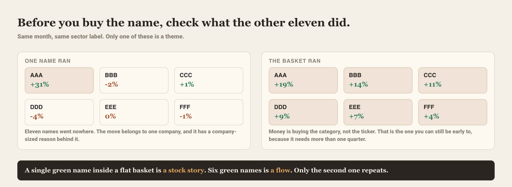
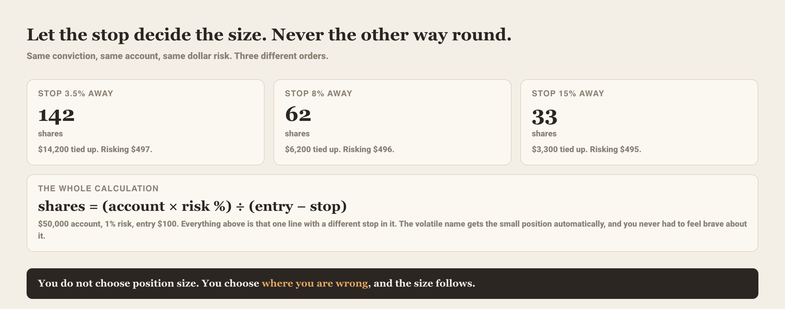
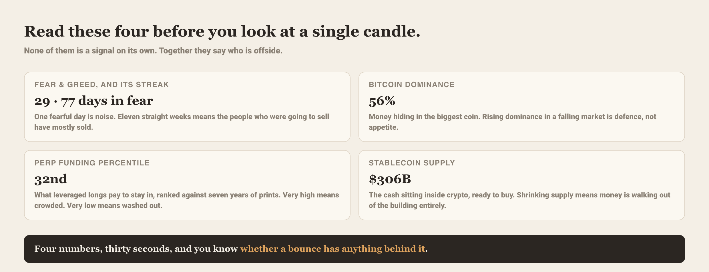

⚡ Viral desk
The single daily posting page, Substack-only: one Copy-for-Notes box per piece,
visuals embedded, everything from tonight's data. The text never pitches; the board and the link
do the selling. Links carry the notes tag, watch what converts in the app's /stats. AI take 50 pieces ready 29 with app proof 4 plugged 15 in feed target 10-15 posted/day
📌 Priority plan · post these 5
- 1. 🏆 $CDNA +34.2% · proof first, receipts sell · pre-open
- 2. 🏆 $MRNA +31.2% · proof first, receipts sell · pre-open
- 3. 🏆 $PRG +29.2% · proof first, receipts sell · pre-open
- 4. 📰 $W New high · the wire-grade number of the day · pre-open
- 5. 📰 $DOX The stack · the wire-grade number of the day · pre-open
+10 more pieces in the feed below
🏆 Wins
1.
$CDNAflagged October 16+34.2%post before the open
$CDNA hit our Breakout board on October 16.
+34.2% since.
CareDx sells the blood tests that tell doctors whether a transplanted kidney is being rejected.
The Breakout board caught it 8% off its high.
Canaccord raised its target to $80 and the Kidney Week data did the rest.
The board flags names like this at every close. Full board is in the app.
$CDNA hit our Breakout board on October 16.
+34.2% since.
CareDx sells the blood tests that tell doctors whether a transplanted kidney is being rejected.
The Breakout board caught it 8% off its high.
Canaccord raised its target to $80 and the Kidney Week data did the rest.
The board flags names like this at every close. Full board is in the app.
Attach the app name page, app.thephilosopherinvestor.com/name/CDNA (auto-captured in the next shots batch).
2.
$MRNAflagged October 8+31.2%post before the open
$MRNA hit our Volume Leaders board on October 8.
+31.2% since.
The board flags names like this at every close. Full board is in the app.
$MRNA hit our Volume Leaders board on October 8.
+31.2% since.
The board flags names like this at every close. Full board is in the app.
Attach the app name page, app.thephilosopherinvestor.com/name/MRNA (auto-captured in the next shots batch).
3.
$PRGflagged October 28+29.2%post before the open
$PRG hit our Bottom board on October 28.
+29.2% since.
PROG Holdings runs lease-to-own financing for furniture and electronics.
The Bottom board caught it 35% off its high.
Q3 results landed with a $100 million accelerated buyback.
The board flags names like this at every close. Full board is in the app.
$PRG hit our Bottom board on October 28.
+29.2% since.
PROG Holdings runs lease-to-own financing for furniture and electronics.
The Bottom board caught it 35% off its high.
Q3 results landed with a $100 million accelerated buyback.
The board flags names like this at every close. Full board is in the app.
Attach the app name page, app.thephilosopherinvestor.com/name/PRG (auto-captured in the next shots batch).
Not in today's queue
$CHPTflagged October 21+36.0%post before the open
$CHPT hit our Pullback board on October 21.
+36.0% since.
ChargePoint builds EV charging hardware and runs the network behind it.
The Pullback board looks for dips inside an uptrend, and it caught this one 19% off its high.
It ran with a basket of clean-energy and industrial names into late October.
The board flags names like this at every close. Full board is in the app.
$CHPT hit our Pullback board on October 21.
+36.0% since.
ChargePoint builds EV charging hardware and runs the network behind it.
The Pullback board looks for dips inside an uptrend, and it caught this one 19% off its high.
It ran with a basket of clean-energy and industrial names into late October.
The board flags names like this at every close. Full board is in the app.
Attach the app name page, app.thephilosopherinvestor.com/name/CHPT (auto-captured in the next shots batch).
$WINGflagged October 27+35.7%post before the open
$WING hit our Quiet Accumulation board on October 27.
+35.7% since.
The board flags names like this at every close. Full board is in the app.
$WING hit our Quiet Accumulation board on October 27.
+35.7% since.
The board flags names like this at every close. Full board is in the app.
Attach the app name page, app.thephilosopherinvestor.com/name/WING (auto-captured in the next shots batch).
📰 Records
Certified extremes computed from our own database (new highs/lows with the exact since-date, day/week/from-the-high stacks, streaks, premium records). Two registers per card: viral and smart.
4.
$WNew highsince March 29as of 2026-11-04post before the open
$W just closed at its highest since March 29, 2022, a 5-year high.
Up 11.0% on the session. Up 8.4% over five sessions. Now sitting 115.3% above its 52-week low.
Everybody who wrote off Wayfair during the 2022 collapse is watching a full round trip.
Five-year highs are not accidents.
Wayfair back at a 5-year high after an 11.0% day.
The furniture e-commerce story everyone buried in 2022 is fully alive again.
Up 115.3% off its low means the easy money is already made. I'd want a pullback before touching it here.
Attach your $W chart, or the app name page app.thephilosopherinvestor.com/name/W. The record does the talking.
5.
$DOXThe stackas of 2026-11-04post before the open
$DOX just fell 30.1% in a single session.
Down 30.1% on the day. Down 29.8% over five sessions. Now 48.9% below its 52-week high.
Anyone holding this software name through the week watched half the position evaporate.
Gaps like that keep gapping.
Amdocs cut 30.1% in one day is a fundamental break, the kind the market reprices in a single gap.
It sits 48.9% off its high now.
I give names like this room to settle for days before I even look at the long side.
Attach your $DOX chart, or the app name page app.thephilosopherinvestor.com/name/DOX. The record does the talking.
Not in today's queue
$NRGNew lowsince September 19as of 2026-11-04post before the open
$NRG just closed at its lowest since September 19, 2024, a 2-year low.
Down 13.5% on the session. Down 14.1% over five sessions. Now 54.8% below its 52-week high.
The independent power producers were the AI-electricity darlings. This is the air coming out.
Two-year lows find more sellers.
NRG at a 2-year low, down 54.8% from its high, is the independent power producer trade unwinding.
The whole group is weak, the utilities IPP names sitting near the bottom of the board.
When a former leader prints a multi-year low on heavy selling, I respect the downtrend and stay away.
Attach your $NRG chart, or the app name page app.thephilosopherinvestor.com/name/NRG. The record does the talking.
$SWKNew highsince June 8as of 2026-11-04post before the open
$SWK closed at 118.33, its highest close since June 8, 2022, a 4-year high.
It now trades +90.5% off its 52-week low.
Five sessions: +17.9%.
Attach your $SWK chart, or the app name page app.thephilosopherinvestor.com/name/SWK. The record does the talking.
$RYTMThe stackas of 2026-11-04post before the open
$RYTM moved +28.0% on the session.
Five sessions: +20.3%.
From its 52-week high: -5.9%.
Attach your $RYTM chart, or the app name page app.thephilosopherinvestor.com/name/RYTM. The record does the talking.
$MODNew lowsince July 24as of 2026-11-04post before the open
$MOD closed at 98.56, its lowest close since July 24, 2025.
It now sits -67.9% from its 52-week high.
Five sessions: -31.3%.
Attach your $MOD chart, or the app name page app.thephilosopherinvestor.com/name/MOD. The record does the talking.
$VSTVolume recordsince January 28as of 2026-11-04post before the open
$VST just traded its heaviest volume since January 28, 2025, 4.3 times its normal pace.
The stock moved -13.8% on that tape.
Attach your $VST chart, or the app name page app.thephilosopherinvestor.com/name/VST. The record does the talking.
$DUOLVolume recordsince February 27as of 2026-11-04post before the open
$DUOL just traded its heaviest volume since February 27, 2026, 9.8 times its normal pace.
The stock moved +26.0% on that tape.
Attach your $DUOL chart, or the app name page app.thephilosopherinvestor.com/name/DUOL. The record does the talking.
🗺 Dealer map
6.
Dealer mapoptions through 2026-11-03post before the open
SPY sits 0.8% above its 760.65 flip, barely into positive gamma. QQQ is 2.7% under its 711.27 flip, deep in negative territory where dealers amplify every move. Tech is where the whip lives this session.
The two indexes are on opposite sides of the line.
SPY sits at 766.81, just 0.8% above its 760.65 flip. QQQ sits at 691.95, a full 2.7% below its 711.27 flip.
Anyone treating tech like the leader is fighting the dealer map.
QQQ is the fragile one.
 ⬇ Download image
⬇ Download imageWalls and gamma flip, straight from the app. Post as-is.
🎯 Callouts
7.
$MSFTcalls bid+2.7%options through 2026-11-03post before the open
big money doesnt usually show up this loud for nothing.
MSFT drew $224M in call premium on a 2.7% up day.
It sits 0.6% off its 52-week high and has beaten the S&P by 11.4% over three months.
This is size leaning into a name already at its highs. I read it as a bet on continuation, and I'd follow the strength while it holds.
$MSFT drew $224M in call premium on a 2.7% up day.
It sits 0.6% off its 52-week high and has beaten the S&P by 11.4% over three months.
This is size leaning into a name already at its highs. I read it as a bet on continuation, and I'd follow the strength while it holds.
 ⬇ Download image
⬇ Download imageReady-made card, post it as-is. The tape does the selling.
8.
$BRKBcalls bidoptions through 2026-11-03post before the open
$167M in $BRKB calls. buffett paper getting loud for once.
quiet name, loud flow.
$167M in $BRKB calls. buffett paper getting loud for once.
quiet name, loud flow.
 ⬇ Download image
⬇ Download imageReady-made card, post it as-is. The tape does the selling.
9.
$GOOGputs bid+0.1%options through 2026-11-03post before the open
the stocks been dead weight all quarter.
GOOG took $165M in put premium while the stock sat flat at 0.1%.
It trades 29.0% off its 52-week high and lags the S&P by 19.2% over three months.
The puts agree with the chart. I stay away from the long side until it proves it can hold a bid.
$GOOG took $165M in put premium while the stock sat flat at 0.1%.
It trades 29.0% off its 52-week high and lags the S&P by 19.2% over three months.
The puts agree with the chart. I stay away from the long side until it proves it can hold a bid.
 ⬇ Download image
⬇ Download imageReady-made card, post it as-is. The tape does the selling.
🔀 What changed
10.
Insider buy: SAFX2026-11-04post before the open
A 10% owner of $SAFX, Eeme Energy Spv I, LLC, just put $142.1M of its own money into the stock on November 4.
That is a big holder doubling down with real cash, the kind of filing worth a second look.
When someone already sitting on 10% writes a check that size, they think the stock is cheap right here.
I'd watch whether other insiders follow or the volume picks up behind them.
 ⬇ Download image
⬇ Download imageThe app page that shows it. Post as-is.
Archive · 19 past items, reusable
The Golden Cross board lit up2026-11-03
The Golden Cross board lit up too. 72 names crossed into that long-term uptrend signal at Tuesday's close that were not there the day before. A golden cross is just the fifty-day average crossing above the two-hundred-day, the slow signal trend followers live by. Seventy-two at once says a lot of charts quietly turned the corner. I will be checking how many hold the cross into next week.
https://app.thephilosopherinvestor.com/screeners?view=changes&utm_source=notes
Screenshot to attach: the app page /screeners?view=changes. Check the facts still hold before posting.
The Quiet Accumulation board lit up2026-11-03
Here is something that does not happen on a sleepy day. At Tuesday's close, 92 names showed up on the Quiet Accumulation board that were absent the session before. That board hunts for stocks being bought steadily while nobody is paying attention. Ninety-two new ones in a single session is a crowd. I would watch which of them are still there by Wednesday's close, because the ones that stick are the real tell.
https://app.thephilosopherinvestor.com/screeners?view=changes&utm_source=notes
Screenshot to attach: the app page /screeners?view=changes. Check the facts still hold before posting.
Insider buy: LEN2026-11-03
Berkshire Hathaway just disclosed buying $192.6M of Lennar, the big homebuilder, with its own money as a 10% holder.
When a name on that balance sheet adds to a housing bet this size, it says something about how they read mortgage rates and home demand from here.
Watch whether other value buyers follow into housing, because moves like this rarely stay solo for long.
https://app.thephilosopherinvestor.com/insiders?utm_source=notes
Screenshot to attach: the app page /insiders. Check the facts still hold before posting.
Breadth regime flipped2026-11-03
The app's breadth gauge flipped from cautious to defensive at Tuesday's close, dropping from 48 to 40.
In plain terms, fewer stocks are carrying the market while the headline index holds up.
That is the kind of reading that shows up before the averages catch down to their own internals.
Watch whether the leaders that held the market up can keep doing it, because defensive readings tend to stick once they start.
https://app.thephilosopherinvestor.com/economy?utm_source=notes
Screenshot to attach: the app page /economy. Check the facts still hold before posting.
New 13F position: BBWI2026-10-26
Greenhaven Associates, a low-profile long-term value shop, just disclosed a brand-new stake in Bath & Body Works in its October 26 filing. The position is tiny, about $159K at the time, so read it as a toe in the water. Still, a value fund starting a position in a beaten-down mall retailer is the sort of first move worth filing away. Watch whether they build on it next quarter.
https://app.thephilosopherinvestor.com/whales?utm_source=notes
Screenshot to attach: the app page /whales. Check the facts still hold before posting.
The Bottom board lit up2026-10-28
Here is something worth clocking from Wednesday's close.
Twenty-seven names showed up on the Bottom board that were absent the session before.
That board hunts stocks that have been beaten down and are starting to turn. One or two new names is noise. Twenty-seven in a single day means a whole batch of broken charts bottomed at once.
Into Thursday, watch whether any of them follow through or just bounce and fade.
https://app.thephilosopherinvestor.com/screeners?view=changes&utm_source=notes
Screenshot to attach: the app page /screeners?view=changes. Check the facts still hold before posting.
Insider buy: KOD2026-10-23
Baker Bros is one of the sharpest biotech funds on the planet, and they just bought $157.0M of Kodiak Sciences on the 23rd, wearing both a director and a 10% owner hat. Kodiak is an eye-disease biotech, the kind of binary name that lives and dies on trial data. A buy this size from someone who sits on the board is a bet on what the clinic prints next. Watch the data.
https://app.thephilosopherinvestor.com/insiders?utm_source=notes
Screenshot to attach: the app page /insiders. Check the facts still hold before posting.
Insider buy: CRBG2026-10-23
Here is one worth a look. Nippon Life, a 10% owner of Corebridge Financial, put $225.7M of its own money into the stock on the 23rd. That is Japan's largest life insurer adding to a US annuity and retirement business it already owns a piece of. When a strategic holder that size buys more instead of trimming, it usually likes the yield math. Watch whether the filing pulls other insiders in behind it.
https://app.thephilosopherinvestor.com/insiders?utm_source=notes
Screenshot to attach: the app page /insiders. Check the facts still hold before posting.
Congress bought EL2026-10-19
Jonathan Jackson (House) just disclosed buying EL, $50,001 to $100,000, traded on 2026-09-28.
https://app.thephilosopherinvestor.com/congress?utm_source=notes
Screenshot to attach: the app page /congress. Check the facts still hold before posting.
Congress bought DDOG2026-10-19
A House member, Jonathan Jackson, just disclosed buying Datadog, with the trade dated September 28.
Datadog is the software companies use to watch their cloud systems and catch outages before customers do.
Congressional trades get disclosed weeks late, so the signal is which way they lean. Watch whether more filings start clustering into software.
https://app.thephilosopherinvestor.com/congress?utm_source=notes
Screenshot to attach: the app page /congress. Check the facts still hold before posting.
The Volume Leaders board lit up2026-10-21
The Volume Leaders board filled up at Wednesday's close with 30 names that were absent the session before.
Volume Leaders means unusual activity, far more shares changing hands than normal.
Thirty fresh names in a single day is a crowd suddenly showing up somewhere.
When that many light up at once, I look for the sector they share the next morning.
https://app.thephilosopherinvestor.com/screeners?view=changes&utm_source=notes
Screenshot to attach: the app page /screeners?view=changes. Check the facts still hold before posting.
Congress bought NOKBF2026-10-16
Here is one worth a look. The buy itself happened last month, so you are seeing it with the usual lag that congressional reporting runs on. One mid-size purchase is just a data point. Watch whether other members turn up in the same name when the next filings drop.
https://app.thephilosopherinvestor.com/congress?utm_source=notes
Screenshot to attach: the app page /congress. Check the facts still hold before posting.
The Unusual Puts board lit up2026-10-16
155 names hit the Unusual Puts board at Friday's close that were absent the session before.
https://app.thephilosopherinvestor.com/screeners?view=changes&utm_source=notes
Screenshot to attach: the app page /screeners?view=changes. Check the facts still hold before posting.
Congress bought NXPI2026-10-12
Same representative, same filing, a second buy.
NXP is a chipmaker, and a congressional buy in semis lands the same week the whole group is getting sold hard.
Early or just contrarian, the filing is now on the record.
https://app.thephilosopherinvestor.com/congress?utm_source=notes
Screenshot to attach: the app page /congress. Check the facts still hold before posting.
Congress bought BHE2026-10-12
A member of Congress just put money to work in the market.
It is a small ticket by Washington standards. The interesting part is the timing, buying into early October weakness.
Worth a look at what else shows up in his next filing.
https://app.thephilosopherinvestor.com/congress?utm_source=notes
Screenshot to attach: the app page /congress. Check the facts still hold before posting.
The Pullback board lit up2026-10-12
At Monday's close, 153 names showed up on the Pullback board that were absent the session before.
That is a flood. Pullbacks are uptrending stocks taking a breather, and 153 of them hitting at once means a lot of strong charts dipped together on the same day.
Either Tuesday they bounce and those dips were gifts, or they keep sliding and the uptrends were weaker than they looked.
Watch how many hold their lines.
https://app.thephilosopherinvestor.com/screeners?view=changes&utm_source=notes
Screenshot to attach: the app page /screeners?view=changes. Check the facts still hold before posting.
Insider buy: RSG2026-10-09
On October 9, Cascade Investment, the firm that manages Bill Gates's money, bought 288.9M dollars of Republic Services with its own cash.
Cascade already owns more than 10% of the garbage hauler, and it just wrote a nine-figure check to own more.
When the people who already control a company keep buying, it is worth knowing which company. This one picks up America's trash.
Watch whether the next filing shows more buying behind it.
https://app.thephilosopherinvestor.com/insiders?utm_source=notes
Screenshot to attach: the app page /insiders. Check the facts still hold before posting.
Congress bought SNOW2026-10-07
A member of Congress, Maria Elvira Salazar, just disclosed buying Snowflake stock.
The trade happened back on September 4 and only surfaced October 7, which is how the disclosure window works.
Still worth knowing who in Washington is buying the data-cloud names while they write the rules around them.
https://app.thephilosopherinvestor.com/congress?utm_source=notes
Screenshot to attach: the app page /congress. Check the facts still hold before posting.
Insider buy: GPI2026-10-05
Conifer Management put $179.0M into Group 1 Automotive on October 5, and they already own more than 10% of the company.
People buying nine figures of a stock they are this exposed to usually think it is cheap.
Group 1 runs car dealerships, the unglamorous kind of business that throws off real cash.
Watch whether other insiders follow them in.
https://app.thephilosopherinvestor.com/insiders?utm_source=notes
Screenshot to attach: the app page /insiders. Check the facts still hold before posting.
📊 Boards
11.
Sector mapEOD 2026-11-04post before the open
Energy fell out of a tape that otherwise went straight up.
XLE dropped 4.7% while SPY rose 1.7%, and its relative-strength line crossed down just one session ago.
That fresh cross is the rotation showing up before the chart fully agrees.
The broad breadth confirms the move around it, with the money flowing into discretionary and financials.
Commodities line up behind the exit too, with oil and gas explorers off 6.4%.
The Hormuz disruption odds still sit at 10.5%, so this selling is about positioning more than a supply shock.
Thursday confirms it if XLE fails to reclaim and the explorers keep leaking.
The leadership baton already left energy's hand.
 ⬇ Download image
⬇ Download imageToday's board, straight from the app. Post as-is.
🚀 Features
12.
The index and sector ETF sheetshipped 2026-09-19post anytime
New in the app: The index and sector ETF sheet.
You can now see all eleven sectors ranked together with SPY, QQQ, IWM, biotech and real estate on one heat-mapped sheet.
Sort by the week or the quarter and read each row's distance to its 20, 50 and 200-day averages and to its 52-week high in a single glance.
One look tells you which ETFs are stretched and where the year's leaders sit.
 ⬇ Download image
⬇ Download image✍️ Ready-to-post essays
Evergreen posts written from the latest close, one per proven template (Typeshare / Content OS). Post as-is or edit.
13.
How To GuideessayBANKEOD 2026-11-04post anytime
How to read a red day, step by step:
1. Look at what refused to go down. Strength that holds on a weak tape is real strength.
2. Look at what led the selling. Yesterday's leaders cracking is a different market than laggards bleeding.
3. Look at the close, then the reaction to the close. Panic that gets bought tells you more than the panic itself.
The trap: judging the day at its low, then never updating.
The tape grades the day at the bell. So should you.
14.
Never Been EasieressayBANKEOD 2026-11-04post anytime
The most expensive mistake in a drawdown:
Sizing up to win it back faster.
Why everyone makes it: the math feels helpful. Double the size, half the time to recover.
What it costs: the same losing streak that created the hole now digs it twice as fast.
What works instead:
- Cut size when you are cold
- Earn it back one normal trade at a time
- Let the streak end before you lean in again
Recovery is a patience trade. Treat it like one.
Not in today's queue
The Biggest MistakeshortEOD 2026-11-04post anytime
The biggest mistake when a sector rips: chasing the ETF after it already ran.
Instead:
- Wait for the pullback the strong trend gives you.
- Buy the laggards inside the group that haven't moved yet.
- Size small when the move is already extended.
The chase feels safe because it's green. That is exactly why it's dangerous.
🔌 PLUG THIS ONE
When this Note picks up steam, reply to it with:
Every week I publish the setups I like, the levels I watch, and one idea I would actually trade.
Free: https://philosopherinvestor.substack.com/subscribe
Things Needed To Do XshortBANKEOD 2026-11-04post anytime
Everything you need to trade seriously:
- A process you wrote down
- A size that lets you think
- A record of what you actually did
Everything you don't: the eighth monitor, the secret indicator, the guru.
Blank templates (fill one by hand)
Essays (90-180 words, ABDCE 250-400)
Mistakes & Lessons
The most expensive mistake in {situation}:
{the mistake}
Why everyone makes it: {reason it feels right}
What it costs: {consequence}
What works instead:
- {practice 1}
- {practice 2}
- {practice 3}
{one line that locks the lesson}
Myths
"{the myth}"
You hear it everywhere.
Here is why it spreads: {reason}
And here is what the tape actually shows: {observable reality}
{implication for how you trade}
How To Guide
How to {specific outcome}, step by step:
1. {step}
2. {step}
3. {step}
The trap: {common way people ruin it}
{closing push}
Category POV
Most traders believe {consensus}.
I believe {your view}.
The difference: {what each belief makes you do}
{what you do differently because of it}
5 Main Points
{the idea}, in 5 points:
1. {point}
2. {point}
3. {point}
4. {point}
5. {point}
{the conclusion they add up to}
ABDCE Story
{open inside the action, one vivid market moment}
{background: how the setup built}
{development: what unfolded, tension rising}
{climax: the day it broke}
{ending: what it teaches about the current tape}
Top 1% Traits
Traits of the traders who last:
- {trait}: {why}
- {trait}: {why}
- {trait}: {why}
And the one nobody expects: {twist trait}
Top 1% Reminders
Reminders about the top 1% of traders:
- {public fact}
- {public fact}
- {public fact}
{what this means for your expectations}
Never Been Easier
It has never been easier to {outcome}.
{what used to be locked away}
{what is now open to anyone}
The catch: {where the real edge lives now}
Elite Action Takers
{the small action} takes {small time}.
Almost nobody does it.
{what doing it compounds into}
{what skipping it costs}
Start today: {first step}
Top Product Checklist
Before you trust any market tool, check:
- {requirement}
- {requirement}
- {requirement}
- {requirement}
Most fail on {the usual failure}.
{light closing line}
Short tips (30-80 words)
The Biggest Mistake
The biggest mistake in {situation}:
{mistake}
Instead:
- {action}
- {action}
- {action}
{outcome line}
Do These 5 Things
If you are {situation}, stop {harmful reflex}.
Do these 5 things:
- {thing}
- {thing}
- {thing}
- {thing}
- {thing}
{what the practice protects}
Old Way / New Way
How to {task}.
Old way:
{the grind}
New way:
{the current path}
{one line on what changed}
You Don't Need X
You don't need {overrated thing}.
Go find {what matters}.
{one line on why the swap wins}
99% Don't Do This
99% of traders never {practice}.
Why: {reason they skip it}
The 1% who do get {payoff}.
{invitation line}
If You're This, Remember
If you are {specific spot}, remember:
{the reminder}
{one line of steadying context}
Do These 3 Things
Before the next open, do 3 things:
1. {thing}
2. {thing}
3. {thing}
{what they add up to}
Things Needed To Do X
Everything you need to {outcome}:
- {real requirement}
- {real requirement}
- {real requirement}
Everything you don't: {the fake requirements}
Lessons From The Tape
3 lessons from this week's tape:
1. {lesson from a real move}
2. {lesson from a real move}
3. {lesson from a real move}
{the thread that ties them}
Engagement (30-70 words)
The Weekly Review
I review my {topic} every week.
The questions I ask:
- {question}
- {question}
- {question}
How do you review {topic}?
🔍 Inside the app
Teasers for the public articles page, which teaches a method and shows the screen that runs it. Evergreen, so post them any day the queue is thin.
15.
🔍 How I read a theme instead of a stock/themesevergreen
A single name will lie to you about how strong an idea is. Eleven names beside it will not.
A green name inside a flat basket is a stock story. Six green names is a flow, and only the second one repeats.
I wrote up how I actually do it, with the screen that runs it at every step.
https://signalpluspro-67.github.io/c-a22104a111/app_articles.html#read-the-basket

Links to the public article, which links to /themes. Nothing in it expires.
Not in today's queue
🔍 How I size a position/positionsevergreen
Bad setups cost you a trade. Bad sizing costs you the account. Only one of those two is fully in your hands.
You do not choose position size. You choose where you are wrong, and the size follows.
I wrote up how I actually do it, with the screen that runs it at every step.
https://signalpluspro-67.github.io/c-a22104a111/app_articles.html#size-from-the-stop

Links to the public article, which links to /positions. Nothing in it expires.
🔍 How I read crypto without opening a chart/cryptoevergreen
Price tells you what the last trade was. It says nothing about who is left to trade.
The fear and greed streak carries more information than its level. Eleven weeks means the sellers have largely gone.
I wrote up how I actually do it, with the screen that runs it at every step.
https://signalpluspro-67.github.io/c-a22104a111/app_articles.html#crypto-without-a-chart

Links to the public article, which links to /crypto. Nothing in it expires.
🧭 Sectors and sub-sectors
Sector mapEOD 2026-11-04post before the open
Energy fell out of a tape that otherwise went straight up.
XLE dropped 4.7% while SPY rose 1.7%, and its relative-strength line crossed down just one session ago.
That fresh cross is the rotation showing up before the chart fully agrees.
The broad breadth confirms the move around it, with the money flowing into discretionary and financials.
Commodities line up behind the exit too, with oil and gas explorers off 6.4%.
The Hormuz disruption odds still sit at 10.5%, so this selling is about positioning more than a supply shock.
Thursday confirms it if XLE fails to reclaim and the explorers keep leaking.
The leadership baton already left energy's hand.
The rally had a hole in it.
Discretionary ripped 4.3%. Financials added 3.5%. Energy fell 4.7% and Technology closed flat.
Anyone treating this as a broad melt-up is missing that two sectors did the lifting while two sat it out.
This is a rotation, plain and simple.
⬇ Download imageDownload the map and attach it. The rotation does the talking.
Sub-sector mapEOD 2026-11-04post before the open
Recreational Vehicles is the sharpest turn on the board.
The group's 20-day relative strength runs +29.0% against the S&P while its 60-day still sits at -2.8%.
That gap is the whole story: a beaten group that just snapped higher fast.
Breadth backs it, with 71% of the names above their 50-day average.
This is the cyclical, consumer-spending trade showing up in a corner you'd only find by looking, and it drags Consumer Cyclical with it as XLY leads the tape.
The median name in the group returned 27.7% over 20 days, so the strength is spread across the group.
Thursday holds if the 60-day RS keeps climbing toward positive.
Strong hands are buying the discretionary recovery where it is still cheap.
🔌 PLUG THIS ONE
When this Note picks up steam, reply to it with:
The board that flagged this is live in the app, with every level on the chart.
https://app.thephilosopherinvestor.com/?utm_source=notes&utm_content=plug-807dc8e934
Recreational vehicles went from dead to leading in a month.
Up 29.0% relative to the S&P over 20 days. The median name returned 27.7% over the same stretch. 71% of them now sit above their 50-day average.
The crowd still thinks the consumer is rolling over.
This corner says otherwise.
 ⬇ Download image
⬇ Download imageDownload the map and attach it. The rotation does the talking.
🧬 Themes
Digital Healthas of 2026-11-04
Digital Health is one of the few groups where the move and the breadth agree.
The basket added 3.7% on the week with breadth at 85, meaning the strength runs through the whole group.
Teladoc leads it hard, up 41.0% on the week and 68.1% on the month, carrying the top relative-strength rank in the theme.
The force underneath is real: telehealth, AI diagnostics and genomics digitizing a slow, expensive industry, where the profitable compounders pull away from the story stocks.
That separation is why breadth at 85 matters, the money is spreading past the obvious leader.
Underneath, the flow velocity sits at 5 against a baseline of 6, a touch cooler even as price runs.
That tells me this is mid-move, the easy repricing already behind it.
It ties to the broader health-care bid that carried the defensive side of the tape.
The read breaks if Teladoc stalls and breadth thins behind it.
Thursday holds the theme if the second-tier names keep gaining while the leader rests.
Real buyers are rotating into quality digital health while the flow still lets them in.
Telehealth is having a moment again.
Teladoc ripped 41.0% in a week and 68.1% in a month.
The basket's breadth reads 85, so the whole group is moving together.
Anyone who left digital health for dead after the 2021 crash is watching it come back.
The move has company this time.
 ⬇ Download image
⬇ Download imageDownload the board and attach it. The basket does the selling.
Trump Portfolioas of 2026-11-04
Trump Portfolio is really a consumer-resilience basket wearing a political label.
The names that led are the ones you swipe a card at, Home Depot up 11.9% on the week with McDonald's and Mastercard right behind.
That is the American consumer refusing to roll over, and the basket's breadth at 65 says the bid is broad.
Accenture is the quiet leader, up 36.6% on the month and carrying the top relative-strength rank in the group.
The force underneath is monthly disclosure of real positions, and a Motley Fool piece on Accenture framed it as the better tech buy over Oracle.
The options tape inside the basket leans long, with heavy call premium stacking in the mega-caps.
Underneath, flow velocity sits at 15 against a baseline of 18, cooling while price holds.
That says the basket is being held now, the fresh chase already spent.
This trades on spending and rates more than politics.
The read breaks if the card names roll and breadth drops under half.
Thursday holds if Home Depot and Mastercard keep leading into the open.
The money here is betting the consumer outlasts the hiking cycle.
 ⬇ Download image
⬇ Download imageDownload the board and attach it. The basket does the selling.
Semiconductorsas of 2026-11-04
Semiconductors is a momentum reading held up by a very short bench.
The basket fell 12.2% on the week, yet its momentum score still reads 90.6 on the strength of a couple of names.
Breadth tells the truth the headline hides, sitting at just 23.8, so most of the group is already broken.
NXP Semiconductors is the leader holding the average up, up 5.3% on the week and above its key average, with Texas Instruments barely green and the rest red.
The structural story is the AI buildout, the capex supercycle from hyperscalers and onshoring fabs, and it is still real for the few names with the orders.
The basket looks alive on momentum, and underneath the flow velocity ticked up to 9 from a baseline of 7, buyers stepping into the weakness.
That rising flow into a falling group is late-cycle behavior, dip-buyers meeting distribution.
It ties straight to Technology closing flat while the rest of the tape ran, the sector that led for two years now the anchor.
The read breaks if NXP rolls and the breadth stays this thin.
Thursday needs the equipment names to stop leaking or the whole group retests lower.
The leadership that drove the bull is the weight on it now.
 ⬇ Download image
⬇ Download imageDownload the board and attach it. The basket does the selling.
Founder Ledas of 2026-11-04
Founder Led is pulling in two directions under one roof.
The basket slipped 5.4% on the week while its biggest names split hard, DoorDash up 17.2% as Meta sank 14.7% on the month.
That spread is the signal: skin-in-the-game founders still get the benefit of the doubt, and the market is sorting the winners from the laggards inside the group.
Breadth at 42.3 confirms the split, with less than half the names participating.
Roblox holds the top relative-strength rank yet trades below a key average after a Q3 loss that still beat on revenue on October 29, the kind of name this basket stays patient with.
The force underneath is the founder-CEO premium, the long-dated capital allocation the market pays up for when it trusts the operator.
Underneath the tape, flow velocity ticked to 5 from a baseline of 4, a small lean back in even as price fell.
That modest bid into weakness says the basket is being accumulated selectively, still early in its sorting.
It ties to the broader growth-versus-rates fight, with higher yields pressuring the longest-duration founder bets hardest.
The read breaks if DoorDash rolls over and breadth falls further.
Thursday holds if the winners keep their gains while the laggards base.
The market is paying for the founders it trusts and dumping the ones it doesn't.
🔌 PLUG THIS ONE
When this Note picks up steam, reply to it with:
The board that flagged this is live in the app, with every level on the chart.
https://app.thephilosopherinvestor.com/?utm_source=notes&utm_content=plug-8b8ed8178c
 ⬇ Download image
⬇ Download imageDownload the board and attach it. The basket does the selling.
All themes tonight
Every basket by heat, with its hottest name. No take, just the tape.
Digital Health heat 63 TDOC +41.0%
Trump's Personal Portfolio heat 58 NWL +12.5%
Semiconductors heat 57 NXPI +5.3%
Founder-Led heat 54 DASH +17.2%
FinTech heat 54 FOUR +17.6%
Robotics & Humanoid heat 53 ISRG +8.5%
Energy (Beyond the Grid) heat 52 ORA +2.9%
Recent IPOs (2024-2026) heat 51 PAYP +12.2%
Defense & Drone Warfare heat 51 TXT +10.6%
Solar Energy heat 51 ARRY +49.7%
Quantum Computing heat 50 MSFT +4.7%
Cybersecurity heat 49 GEN +26.9%
Autonomous Vehicles heat 49 UBER +7.0%
Batteries heat 44 SLDP +9.8%
Photonics heat 43 FN -7.0%
The Five Layers of Memory (AI) heat 41 IBM +0.4%
The Space Race heat 39 HEI +8.6%
AI Agents heat 38 BBAI +4.1%
Iran Regime Change & Sanctions Unwind heat 35 SCO +21.6%
Drones heat 28 AIRO +6.3%
Nuclear Energy heat 26 CEG -4.8%
Crypto heat 22 RIOT +6.4%
Critical Minerals heat 22 ALB -2.1%
Air Taxis heat 22 BLDE +11.6%
Rare Earth Elements heat 20 UAMY -7.7%
🏦 FRED macro
10y real yielddata through 2026-11-0399th pctile
Your savings finally earn more than inflation eats, and by a lot.
The 10-year real yield, the interest you keep after inflation, closed at 2.65%.
That is the 99th percentile of its own history, about as high as this number ever gets.
For years cash lost ground to rising prices. Now a safe Treasury pays you a real 2.65% to wait.
That is great for savers and brutal for anything that needs cheap money, from a mortgage to a money-losing growth stock.
When risk-free money pays this well, every risky bet has to clear a higher bar.
Watch whether this yield keeps climbing. The higher it goes, the harder stocks and housing have to work.
My morning board: https://app.thephilosopherinvestor.com/?utm_source=notes
 ⬇ Download image
⬇ Download imageDownload the chart and attach it. Real FRED data, our frame.
10-year Treasury yielddata through 2026-11-0399th pctile
The number that sets your mortgage just hit a wall.
The 10-year Treasury yield, the rate most home loans follow, closed at 4.95%.
That sits in the 99th percentile of its range, near the top of everything it has done.
When this number is high, your mortgage payment is high, your car loan is high, and the government's own interest bill balloons.
It also quietly competes with the stock market: why risk it when a Treasury pays you this much to do nothing.
Watch whether the 10-year holds 4.95% or pushes higher. Everything you borrow rides on it.
My morning board: https://app.thephilosopherinvestor.com/?utm_source=notes
 ⬇ Download image
⬇ Download imageDownload the chart and attach it. Real FRED data, our frame.
High-yield credit spreaddata through 2026-11-0386th pctile
The price risky companies pay to borrow is creeping up, and that is the early tell.
The high-yield credit spread, the extra interest shaky companies pay over safe Treasuries, sits at 3.4%.
That is still low by history, yet it has widened 0.6 points over the last three months and sits in the 86th percentile.
Think of it as the market's nervousness about weaker borrowers. When it rises, lenders are asking for more cushion.
For a normal person, this is the canary. Credit stress shows up here before it shows up in your job.
Stocks are calm and recession odds are low, so the bond market is only mildly worried for now.
Watch whether this spread keeps widening. A sharp jump here is the first real warning sign.
My morning board: https://app.thephilosopherinvestor.com/?utm_source=notes
 ⬇ Download image
⬇ Download imageDownload the chart and attach it. Real FRED data, our frame.
🎲 Polymarket
Polymarket77.5% yesodds snapshot 2026-11-05
The market is almost sure the Fed moves again.
Traders price a 77.5% chance of another rate hike in 2026, down 2.0 points on the week.
Stocks did not get the memo. SPY ran 1.7% with the VIX parked at 16.6.
The people long discretionary and financials here are betting the economy shrugs off tighter money.
Both sides cannot win. Either the hike odds fade and the rally keeps room, or the hike lands and the cheap-money trades get a cold shower.
The next inflation print decides who folds first.
My morning board: https://app.thephilosopherinvestor.com/?utm_source=notes
 ⬇ Download image
⬇ Download imageThe real Polymarket page. Post it as-is.
Polymarket5.5% yesodds snapshot 2026-11-05
The crowd says no recession, full stop.
The market prices just a 5.5% chance of a US recession by the end of 2026, down 0.5 points on the week.
Meanwhile the 10-year real yield sits at the 99th percentile and credit spreads have widened over the last three months.
Those are the places slowdowns usually show up first, and they are flashing a little yellow while the recession market stays asleep.
If the 5.5% is right, the bond market is being a drama queen and stocks have clear air.
The savers and bond buyers paying up for Treasuries are taking the other side.
The jobs and inflation data over the next month settle the argument.
My morning board: https://app.thephilosopherinvestor.com/?utm_source=notes
Screenshot the live market page on polymarket.com before posting (the odds must match the text).
🏛 The Polymath
Polymath 1
A 1.7% day with the biggest sector asleep is a strange kind of rally.
SPY added 1.7% and 4045 names advanced against 1483 that fell, the broadest tape in weeks. Underneath it, Technology closed flat at -0.0% and the semiconductor group bled, its 20-day relative strength running -21.3% against the S&P. The acceleration is the tell: that weakness is deepening while the index prints green, which means a thin slice of mega-caps is carrying less of the load. Anyone long the market through QQQ is offside here, because QQQ sits 2.7% below its gamma flip in negative territory, where dealers amplify every move. Thursday has to show tech joining the breadth or the breadth narrowing to catch down. One of those breaks.
 ⬇ Download image
⬇ Download imageThe app's Market monitor, embedded by default. Post as-is.
Visual to attach (alternative): SPY's advance-decline line plotted against the semiconductor group's 20-day relative strength, the two pulling apart.
Polymath 2
Energy fell 4.7% while the rest of the tape ran green.
XLE dropped 4.7% on a day SPY rose 1.7%, and its relative-strength line against the S&P crossed down one session ago. That cross is fresh, which means the rotation out of energy is just starting to show in the tape. The damage is already deeper under the surface: oil and gas explorers fell 6.4%, broad commodities lost 3.5%, and the uranium group is running -23.3% relative strength over 20 days. Energy longs who added on the summer strength are the ones offside now, watching a leader roll while the Hormuz disruption odds still sit at 10.5%. Thursday tells the story if XLE fails to reclaim and the explorers keep leaking. The bid left the complex.
🔌 PLUG THIS ONE
When this Note picks up steam, reply to it with:
Every week I publish the setups I like, the levels I watch, and one idea I would actually trade.
Free: https://philosopherinvestor.substack.com/subscribe
⬇ Download imageThe app's Market monitor, embedded by default. Post as-is.
Visual to attach (alternative): XLE's price against its relative-strength line versus the S&P, the RS line crossing down ahead of price.
Polymath 3
Bonds caught a bid on a day the yield screen said they shouldn't have.
The 10-year real yield closed at 2.65%, the 99th percentile of its own range, and the nominal 10-year sits at 4.95%. Both are about as high as they get. Yet long Treasuries drew heavy call flow, TLT with an IV rank of 80 and volume firing, and 7-10 year Treasuries at the 91st percentile of their vol range. Someone is paying up for a bond rally with yields at the top end, a bet that the next move in rates is down. The crowd pricing a 77.5% chance of another hike this year is on the other side of that. Thursday watches whether TLT follows through or the real yield pushes to a new high. The vol bid is the first crack in the rate consensus.
⬇ Download imageThe app's Market monitor, embedded by default. Post as-is.
Visual to attach (alternative): The 10-year real yield at a multi-year high plotted against TLT's call-side option volume.
😂 Memes


Generated 2026-11-05 02:23 UTC · rebuilt every market morning (fresh shots) and every
market evening after the close (fresh data; one claude call per EOD, cached). House rules:
published numbers come from our own EOD data, losers are published too.